Leíste el capítulo, resaltaste la mitad y al mes ya no te acuerdas de nada.
Read on Flight convierte lo que marcas en notas, las reúne por materia en todos tus libros y
te deja estudiarlas con Atlas, un compañero de estudio que funciona en tu iPhone, incluso a
diez mil metros de altura.
Abre los PDF, EPUB y archivos Markdown que ya tienes, sin tiendas ni conversiones. La
página no te distrae mientras lees y, cuando quieres saberlo, te muestra cuánto te falta
del capítulo. ¿Primera vez? La app te recibe con un clásico gratis, Flatland, para que
pruebes todo antes de añadir tus libros.
PDFEPUBMarkdownDiagramas MermaidTexto seleccionable en imágenes
Capturar
Resalta a tu manera.
Clasifica cada resaltado: una definición, una duda, algo que quieres recordar. Así, dentro
de un mes, sabrás por qué lo marcaste. Escribe una nota o díctala con la tecla de micrófono
del teclado.
Cada resaltado guarda el pasaje exacto, aunque el archivo ya no esté
Toca un resaltado para cambiarle el color, añadirle una nota o preguntarle a Atlas
Los temas salen del índice del libro, o los nombras tú
Cinco colores para nombrar a tu manera y hasta cinco más tuyos. Un mismo juego en todos tus libros
Exporta todo a Markdown: un libro o toda tu biblioteca
Encontrar
Todo lo que marcaste, al alcance de un toque.
El índice, la búsqueda y tus notas están en un mismo panel, sobre la página. Abre un
resultado y sus palabras aparecen marcadas en la página; abre una nota y con un toque vuelves
a la lista. Si un tópico abarca varios libros, reúnelos en un proyecto de estudio y tenlo
todo en un solo lugar. Afina una búsqueda por libro, tema, proyecto o varios colores a la vez.
Mirar atrás
Mira en qué se te fue el tiempo de lectura.
La biblioteca muestra el tiempo de esta semana de un vistazo. Ábrelo para ver la semana, el
mes o todo el tiempo, por libros y temas. Sin metas ni rachas.
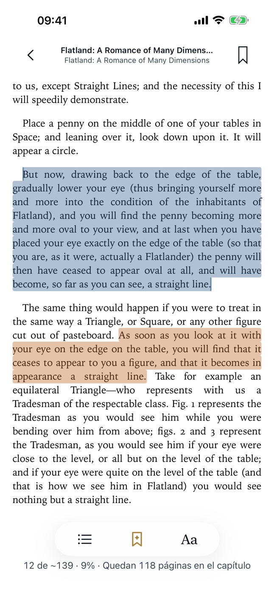
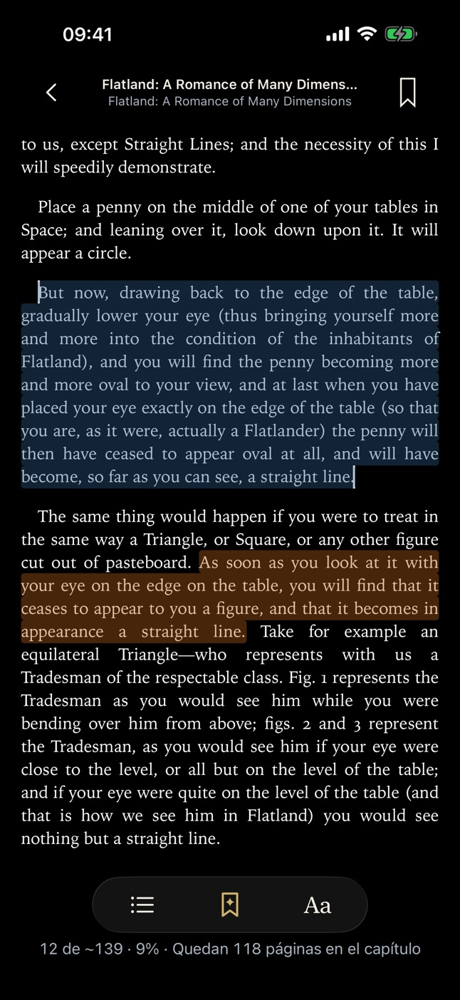
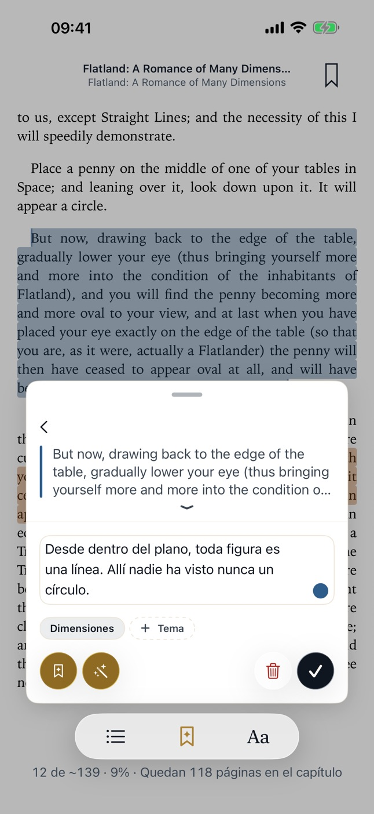
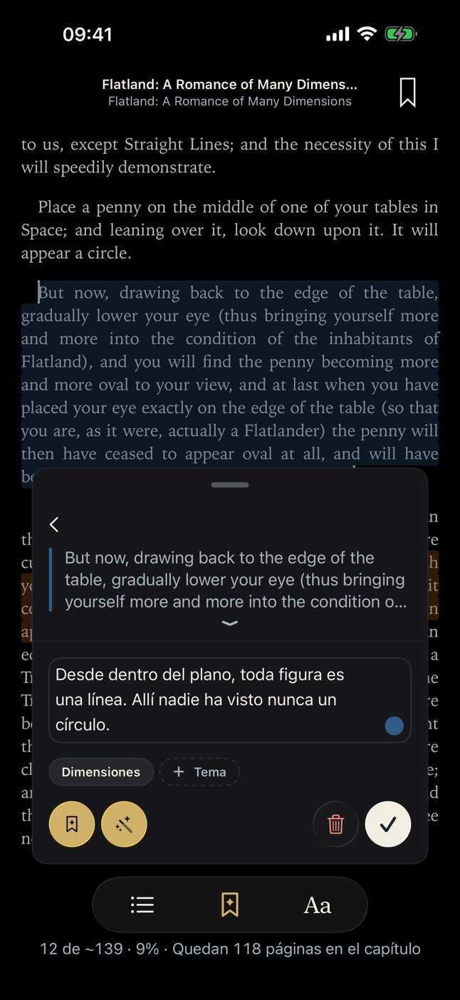
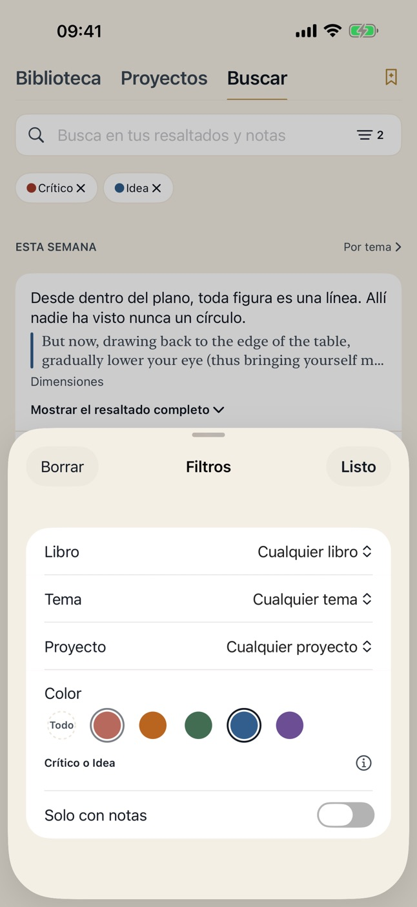
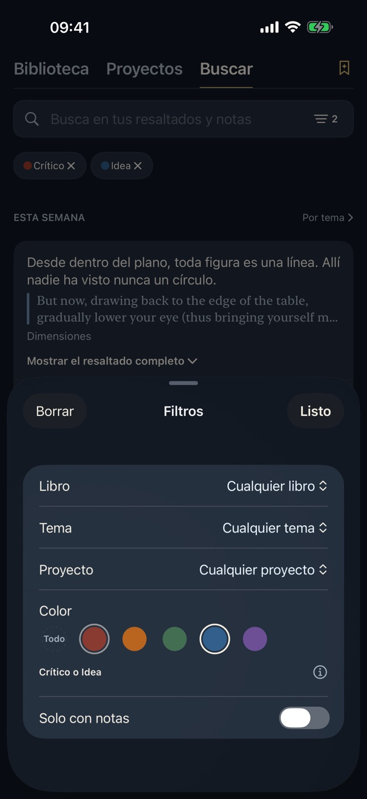
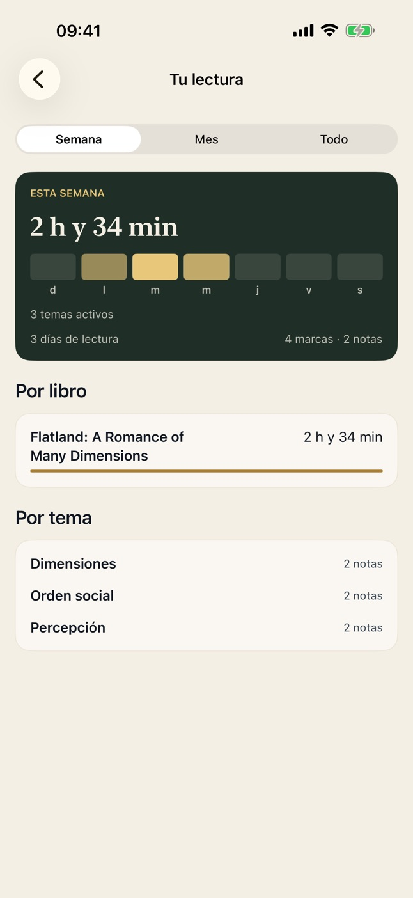
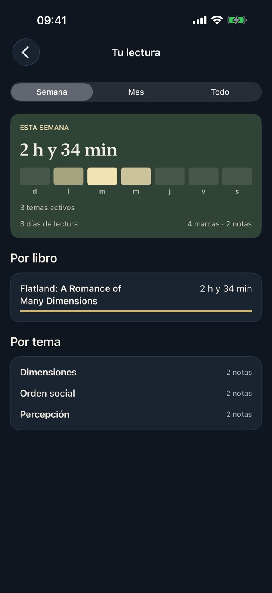
Proyectos de estudio
Estudia un tópico completo, no solo un libro.
Muchos tópicos de estudio no caben en un solo libro. Ponle nombre a lo que estás estudiando y agrúpalo en temas. Cada resaltado y nota que etiquetes en ellos, con cualquier libro, se reúne en un solo proyecto, junto con los demás libros que lees asociados al tópico.
1
Ponle nombre
Crea un proyecto con los temas que abarca. Cámbialos cuando cambie tu interés.
2
Lee y marca
Etiqueta un resaltado con un tema mientras lees. Así de simple: sin carpetas y sin guardar nada dos veces.
3
Todo se reúne
El proyecto muestra todos los resaltados y notas del tópico, de toda tu biblioteca, y los filtras por tema con un toque.
Si borras un proyecto, no se borra nada más: tus libros, resaltados y notas siguen donde están.
Estudia con Atlas
Un compañero de estudio que vuela contigo.
Atlas usa Apple Intelligence dentro de tu propio iPhone: responde en modo avión y tus
preguntas nunca salen de tu teléfono.
Pregunta lo que no entiendes
Selecciona la frase en la que te perdiste y pregunta. Atlas responde y te muestra los pasajes que usó, para que lo compruebes en el libro.
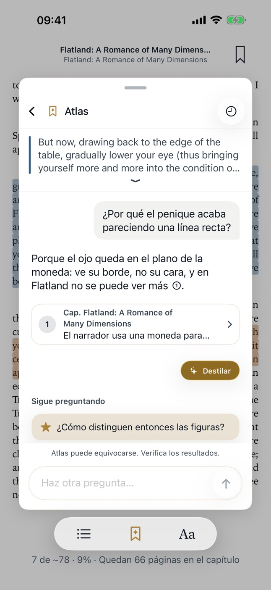
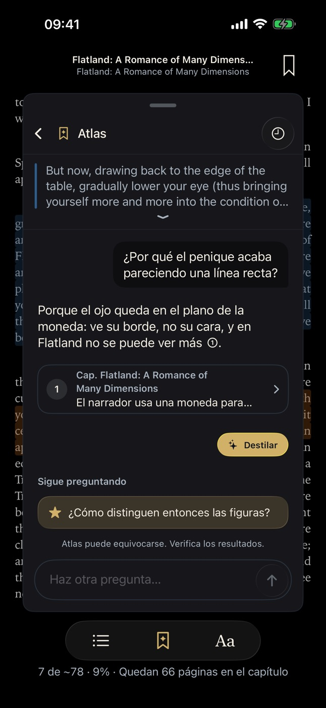
Guarda la conversación en una nota
Cuando una conversación te aclara algo, guárdala: añade una respuesta a tu nota o destila toda la conversación en un resumen breve, debajo de lo que escribiste.
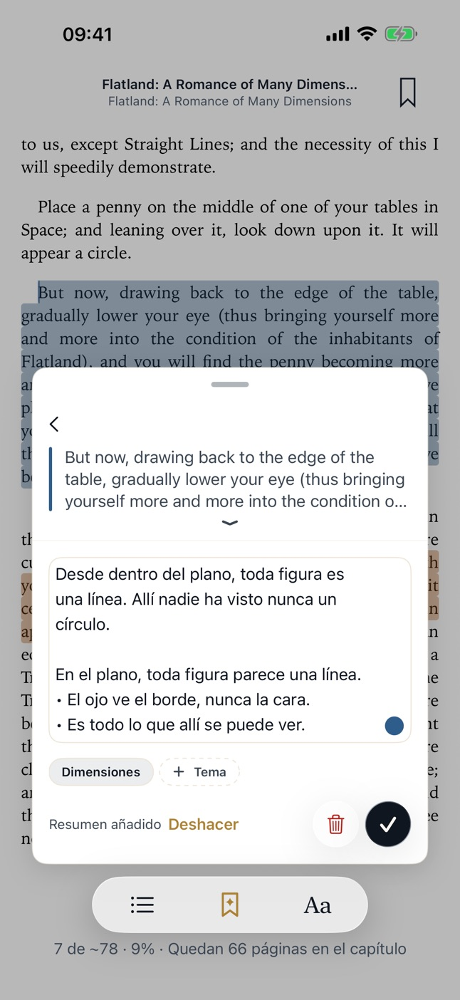
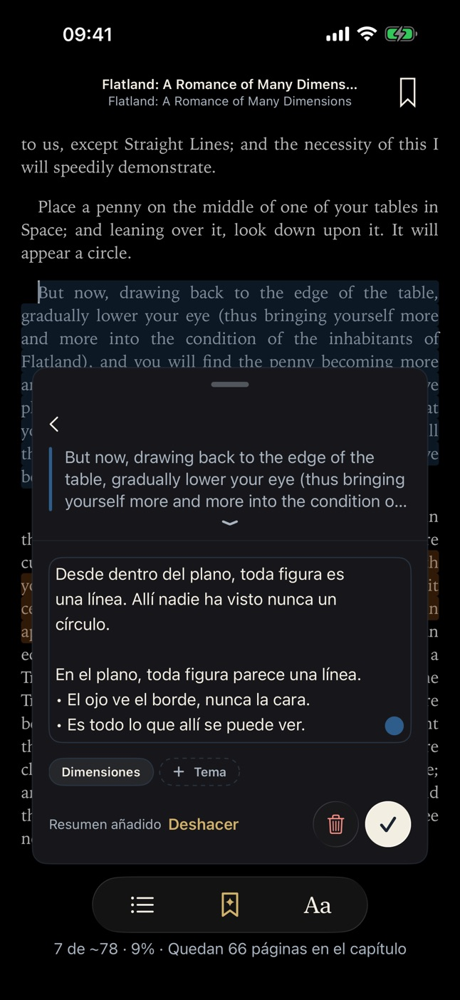
Dilo mejor
Atlas te sugiere una versión más clara de tu nota. Tu texto no cambia hasta que tú aceptes la sugerencia.
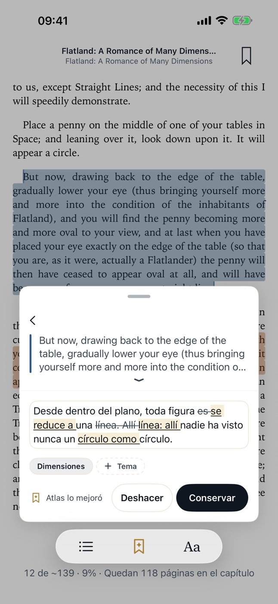
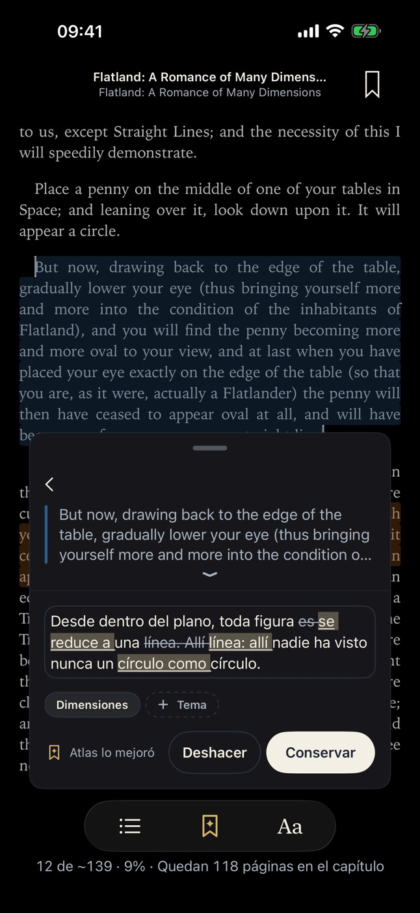
Atlas necesita un iPhone compatible con Apple Intelligence. Puede equivocarse,
así que confirma en el libro lo que sea importante. Las respuestas que se muestran son ejemplos.
Prueba Atlas gratis
Elige un libro y estúdialo con Atlas, gratis para siempre.
Sin periodo de prueba, sin registro y sin tarjeta. Elige el libro que más te interesa estudiar y explóralo con Atlas las veces que quieras. Si Atlas te convence, puedes tenerlo para todos tus libros con una sola compra.
1
Abre un libro tuyo
La primera vez que tocas Estudiar con Atlas en un libro, la app te ofrece hacerlo tu libro gratis.
2
Estúdialo sin límites
Pregunta sobre cualquier pasaje, guarda en tus notas lo que aprendas y mejora lo que escribiste. En ese libro, Atlas no se acaba.
3
O empieza con Flatland
El libro de muestra ya incluye Atlas y no cuenta como tu libro gratis.
Una vez que selecciones tu libro de prueba gratuita, no podrás cambiarlo. Así que puedes explorar primero con Flatland, y luego decidirte por tu libro de interés.
Para utilizar Atlas, necesitas un iPhone que soporte Apple Intelligence.
Precios
Lee gratis, siempre. Paga Atlas una sola vez.
Lector
Gratis
PDF, EPUB y Markdown
Resaltados, notas, temas y búsqueda
Proyectos de estudio y exportación a Markdown
Atlas gratis en un libro que tú elijas, y en el libro de muestra
Atlas Lifetime
Un solo pago. Sin suscripción.
Pregunta, convierte en notas y mejora en todos tus libros
También en cada libro que agregues después
Restáuralo en un iPhone nuevo
Privacidad y propiedad
Tus notas son tuyas. Punto.
Tus libros siguen siendo tus propios archivos PDF, EPUB y Markdown: sin tiendas ni ataduras.
Todo lo que marcas se exporta en Markdown, un libro o toda tu biblioteca, y va contigo a donde
vayas.
Sin registro, sin analítica, sin anuncios. Tus libros, resaltados, notas y preguntas nunca
llegan a nosotros: la app no tiene a dónde enviarlos.